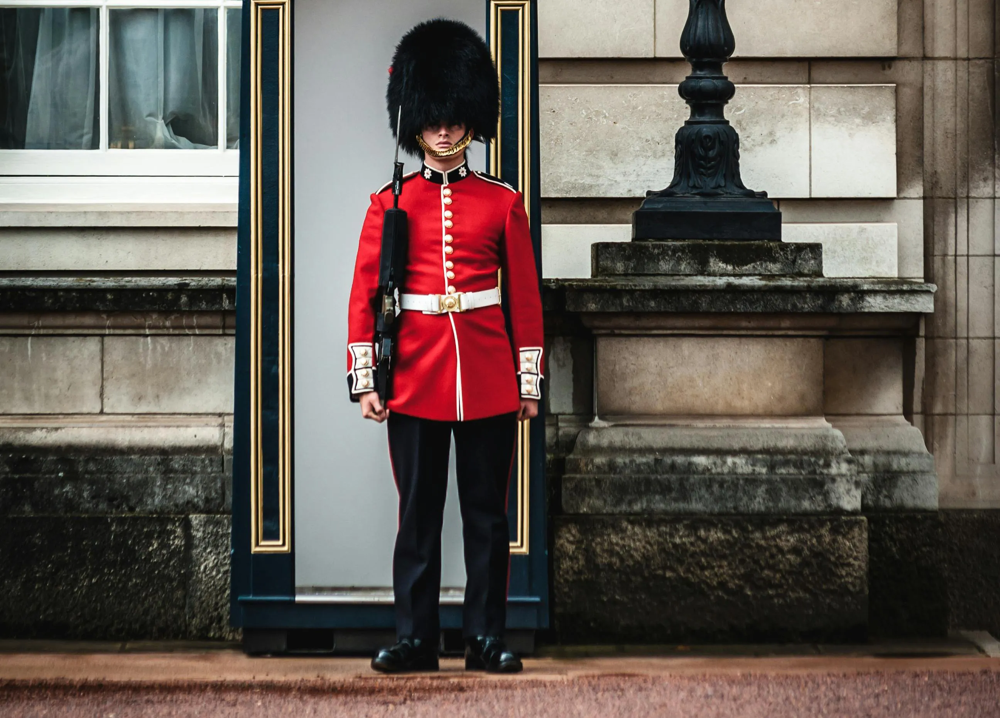

A cultura da Inglaterra é marcada por fortes tradições, influências históricas e uma grande contribuição para a cultura mundial nas artes, literatura, ciência e esportes. Exemplos incluem o famoso "chá das cinco", a importância da pontualidade e das boas maneiras, além de gêneros musicais como o rock e bandas mundialmente conhecidas como os Beatles e os Rolling Stones. A culinária, embora vista como mais simples, tem pratos icônicos como o fish and chips, e o futebol é o esporte mais popular.
Chá das cinco: Um costume social que envolve o consumo de chá acompanhado de sanduíches, bolos e scones, geralmente servido à tarde.
Pontualidade: Valoriza-se muito o cumprimento dos horários marcados.
Boas maneiras:O uso de frases como "por favor" ("please") e "obrigado" ("thank you" ou o mais informal "cheers") é comum.
Pubs:As "public houses" são locais sociais centrais para o consumo de bebidas e para a socialização entre amigos.
Fila: O hábito de formar filas e esperar a vez é uma característica da organização social inglesa